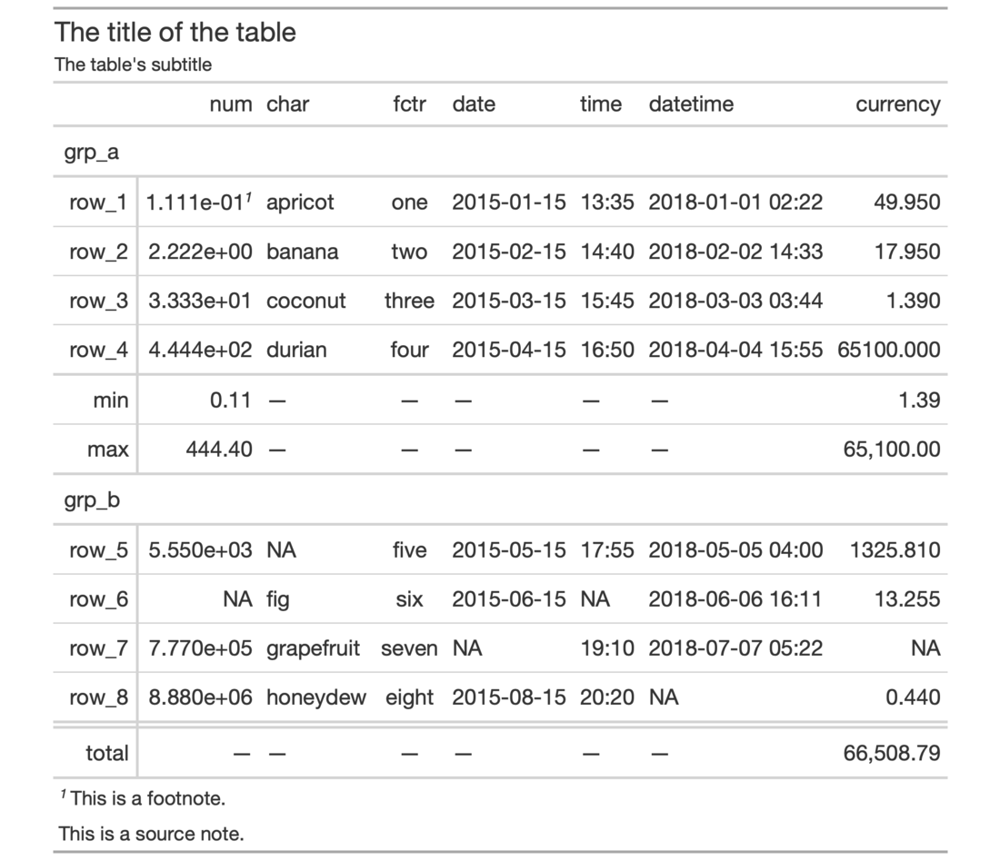

| opt_align_table_header {gt} | R Documentation |
By default, a table header added to a gt table has center alignment
for both the title and the subtitle elements. This function allows us to
easily set the horizontal alignment of the title and subtitle to the left
or right by using the "align" argument. This function serves as a
convenient shortcut for <gt_tbl> %>% tab_options(heading.align = <align>).
opt_align_table_header(data, align = c("left", "center", "right"))
data |
A table object that is created using the |
align |
The alignment of the title and subtitle elements in the table
header. Options are |
An object of class gt_tbl.

9-3
Other Table Option Functions:
opt_all_caps(),
opt_css(),
opt_footnote_marks(),
opt_row_striping(),
opt_table_font(),
opt_table_lines(),
opt_table_outline()
# Use `exibble` to create a gt table with
# a number of table parts added; the header
# (consisting of the title and the subtitle)
# are to be aligned to the left with the
# `opt_align_table_header()` function
tab_1 <-
exibble %>%
gt(rowname_col = "row", groupname_col = "group") %>%
summary_rows(
groups = "grp_a",
columns = c(num, currency),
fns = list(
min = ~min(., na.rm = TRUE),
max = ~max(., na.rm = TRUE)
)) %>%
grand_summary_rows(
columns = currency,
fns = list(
total = ~sum(., na.rm = TRUE)
)) %>%
tab_source_note(source_note = "This is a source note.") %>%
tab_footnote(
footnote = "This is a footnote.",
locations = cells_body(columns = 1, rows = 1)
) %>%
tab_header(
title = "The title of the table",
subtitle = "The table's subtitle"
) %>%
opt_align_table_header(align = "left")